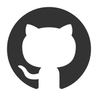

壹。
面朝大海，春暖花开。
归档
首页

https://github.com/SmallOne111
https://www.flickr.com/photos/smallone/
xiaoyi9289@163.com
weixinqq_3956094132
3956094132
https://uu.uucc.cc/npk9i
https://space.bilibili.com/3493117483289214
2026
07月
图集 - 随波逐“游”
7月8日至7月10日，我随我的姐姐短游重庆……
08月
《我认为男性是父权社会的受害者》
来自抖音的一个视频，说出了一个近乎“暴论”的观点……
03月
引子
我为什么要开这个博客？说真的，我被脑子里那个想太多哲学问题的自己骗了……
07月
我学习时应该听音乐吗？
昨天在图书馆写博客时，我戴着耳机听歌，我的朋友突然摘下我的一只耳机……
07月
我的博客改名了
初二结束的暑假，我得到了这样一份特殊的实践作业，多选一，其中一项是在社交媒体上发布原创文字内容，于是，我选择了它……
03月
手记1
这些文字是从我的手记里誊下来的无所从来的想法……
09月
这个暑假被我毁了
7月1日，下午期末考完放假，我的初二学习生活正式结束。那时我满心对暑假的期待，我幻想着每天充实的学习。然而，事与愿违……
09月
校门口的保安
开学第二天的中午，我出校门在外面吃饭。我走的那个门禁有点故障，人还没走过去就会关上，狠狠地夹一下通过的人的腰子……